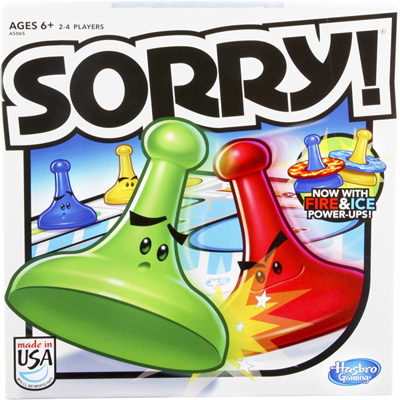

Object of Sorry Board Game:
To become the winner at Sorry, you must be the first player to advance all four
of your pawns from your color Start to your color Home by exact count from the cards.
Game Play:
Each player begins his or her turn by drawing a card and moving according to
the card they draw. To begin a pawn moving forward, you must draw a 1 or 2
. It is against the Sorry rules to begin moving with any other card. You
may jump over any pawn counting that space as a normal space. If your pawn
lands on an occupied space, you bump that pawn back to Start only if that
pawn is not your own. When a player has no possible moves available, they
simply forfeit their turn. If you can move, you must.
If you draw a card that makes you move more than two spaces beyond your own
Start space, on your next turn you may move into your own Safety Zone
without moving all the way around the board. When the all the Sorry card in
the deck are used, shuffle and reuse them.
There are several Slides throughout the Sorry game board. The instructions
and rules stated that if at any time you land by exact count on a triangle
at the beginning of a Slide that is not your own color, slide ahead to the
end and Bump (sending them back to Start) any pawns that are in your way
including your own. If you land on a Slide that is the same color as your
pawn, don't slide; just stay put on the triangle.
The Sorry Safety Zones are only used by pawns of the corresponding colors.
No pawn may enter its Safety Zone by a backward move; however, a pawn can
move backward out of its Safety Zone and on following turns move back into
their Zone as the card permits.
What do the Sorry cards mean? The follow is a list of the actions
associated with each Sorry card during game play:
1 - Starts a pawn out or moves pawn forward 1 space.
2- Starts a pawn out or moves one pawn forward 2 spaces.
Whether you move or cannot move, draw again and move accordingly.
3- Moves one pawn forward 3 spaces.
4- Moves one pawn backwards 4 spaces.
5 - Moves one pawn forward 5 spaces.
7- Moves one pawn forward 7 spaces or can split the forward move between
any two pawns. Using this card to start a pawn is against the Sorry rules.
The instructions do state that you can part of the 7 to get a pawn Home
but that you must be able to use the balance of the move for another pawn.
8- Moves one pawn forward 8 spaces.
10 - Moves one pawn forward 10 spaces or moves one pawn backwards 1 space.
11 - Moves one pawn forward 11 spaces or switches any one of your pawns
with one of any opponent's. You have the option with this card to forfeit
your move if you do not want to switch places with someone else or you
cannot move forward 11 spaces. Using this card towards any pawn that is
not on the open track (Start, Safety Zone or Home) is against the Sorry
rules. If while switching with another player landed you on a triangle at
the beginning of another player's slide, you may slide to the end!
12 - Moves one pawn forward 12 spaces.
SORRY!- This card allows your to take one pawn from your Start and place
it on any space that is occupied by any opponent. This bumps that
opponent's pawn back to its Start. If there is no pawn on your Start or
no opponent's pawn on any space you can move to, you forfeit your move.